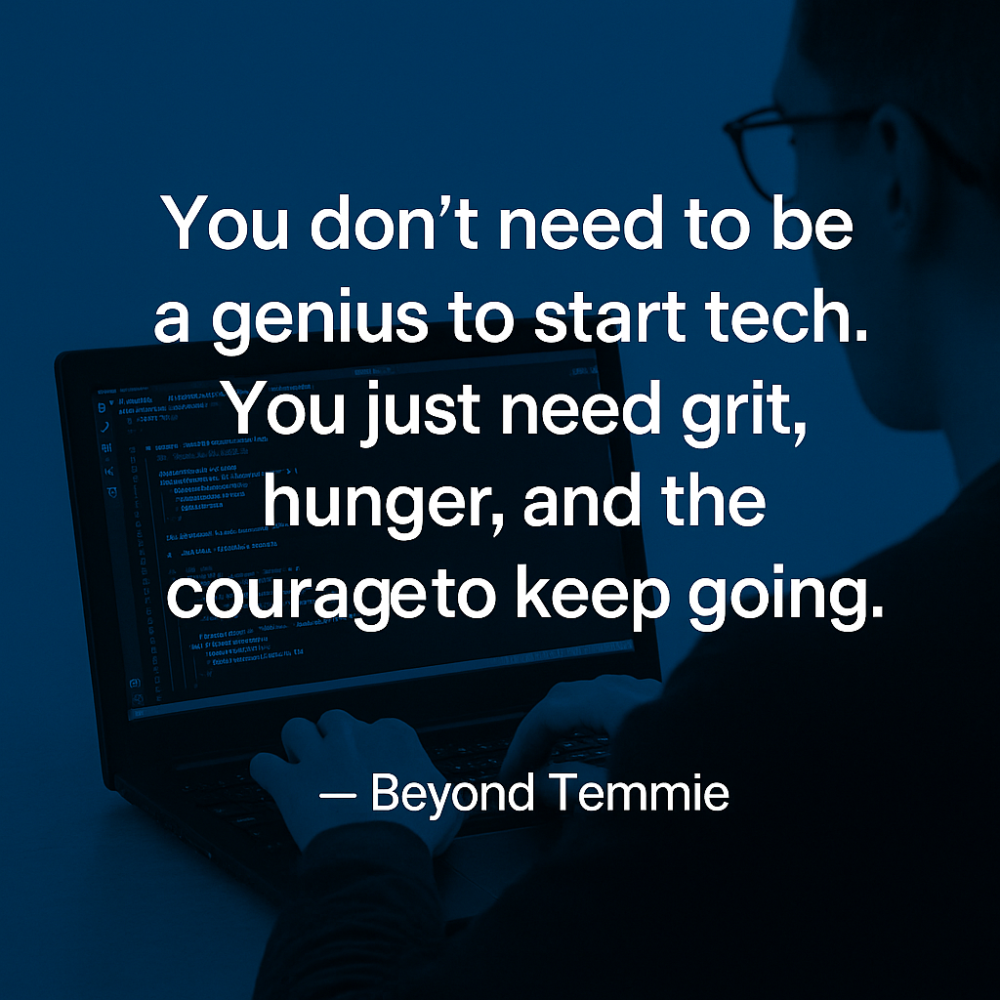

You Don't Have To Be a Genius To Start Tech.

When most people think of tech, they imagine code flying across a black screen, high IQ's, elite schools, and people who "just get it". That image alone is enough to make many give up before they even start.
But here's the truth: you don't have to be a genius to break into tech. You just have to be determined enough not to quit.
I've met people who started coding on phones (myself included). You might be using an old struggling laptop to code, some of us even started with zero knowledge, no mentor, no laptop, no fancy setup, just hunger to grow and the courage to begin anyway.
And that's what makes the difference.
Tech is not about beign the smartest in the room. It's about beign the most resilient.
When your code breaks, will you Google the error or give up?
When your first few designs flop, will you learn and redo it or tell yourself you're not talented enough?
When you don't understand JavaScript, will you press pause and come back, or quit entirely?
That's where growth begins, in the quiet choices to keep going when it's not easy.
So what do you really need to succeed in tech?
you need:
- Curiosity: a desire to learn and explore.
- Build projects as you learn: In software, web/app development, the way you know you're leraning is by building projects.
- Consistency: showing up even when you're tired or busy.
- Grit: pushing through imposter syndrom, errors, and slow progress.
- Faith: not just in your ability to grow, but in the possibility of where this journey can take you.
You don't need to be a genius. You need to be stubborn about your goals and soft enough to keep learning.
So whether you're coding on a borrowed laptop, using people's hotspot to download tutorials, leraning UX on a borrowed phone/laptop, or using a laptop that crashes often, you belong here.
Tech has space for the persistent. For dreamers. For people like you.
Keep going. Your growth is prove that being brilliant isn't the starting point, It's the result of never quitting.
If this encouraged you, share it with someonewho needs the reminder that they don't have to be perfect to start, just willing. And if you're already on your journey, keep building. Your story is unfolding one line of code, one design, one breakthrouh at a time.